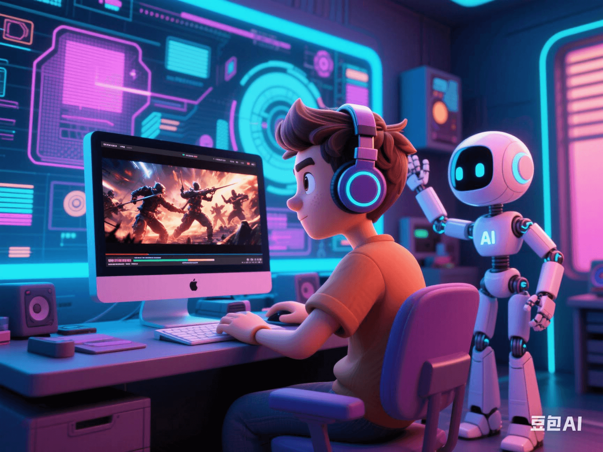

Understand in 5 Minutes: How Generative AI Enables Ordinary People to Create Hollywood-Level Short Films in 10 Seconds?
PeaceLove.Top Insights :2025-04-19
🎬 Remember What It Took to Shoot a Decent Short Film Before?
💻 High-configuration devices, 💰 Tens of thousands of budgets, 🎥 Shooting teams, ✂️ Editors... But now, with just 👉 One mobile phone + One sentence instruction, ordinary people can create visual blockbusters like Hollywood trailers. All because-the magic of generative AI has arrived!
🧠 What is 'Generative AI'?
Generative AI is a type of artificial-intelligence model that can automatically generate content based on text or image prompts, covering multiple fields such as images, audio, videos, and 3D animations. You just need to tell it 'I want to see a bear riding a motorcycle racing on the moon', and it can really generate this clip in a few seconds! 🐻🏍️🌕
🎞️ One Sentence = One Blockbuster? How Does It Work?
AI models for generating videos, such as:
- Runway ML (A magic tool for editing and video generation)
- Pika Labs (With a strong style, suitable for creative short films)
- Sora (OpenAI) (Currently in the testing phase, but can generate 1-minute high-quality videos)
They can all generate video content with dynamics, lighting, and scene transitions based on text prompts (Prompts). 🌟 Example Prompt: 'In a future city, a one-eyed robot crosses the neon-lit streets on a rainy day, with a style like Blade Runner.' Within a few seconds, the system will automatically generate a'sci-fi short film' with cool pictures and a full atmosphere 📹✨.
🛠️ Tool Recommendations: AI Video Tools That Ordinary People Can Easily Use
| Tool Name | Function Highlights | Suitable for |
|---|---|---|
| Runway ML 🧩 | Text-to-video, AI image matting, video coloring | Beginners & Micro-short-drama creators |
| Pika Labs 🎨 | Unique style, highly creative-oriented | Lovers of art-style short films |
| Kaiber 🚀 | Music videos, style-changing animations | Musicians & Vloggers |
| Genmo 🎬 | Text-to-3D visual animations | Those who want to try game-plot animations |
👉 All these tools have web versions. You just need to upload or input instructions, no need to install complex software or have editing experience!
💥 Hollywood Short Films = AI + Creativity + You
In the past: You might have been troubled by not knowing how to shoot, edit, having no actors or budget. Now: You just need an idea + one instruction, and AI will be your 'film crew' 👨💻🎥🎭. For example: 'A talking cat floating in space reciting poetry, with a style like a Hayao Miyazaki animation.' 🤖 AI will immediately arrange it: cartoon filters, aligned cat mouth-shapes, background music, and a galaxy scene, all in one go!
🌍 How Is Generative AI Disrupting the 'Video Industry'?
✅ 1. Demediation of Creators
🎨 No longer relying on big companies, one person can create exquisite content!
✅ 2. Explosive Growth of Video Content
📈 On digital platforms, the playback volume of short-videos + AI-generated content has skyrocketed, creating a new track for 'AI short dramas'.
✅ 3. Comprehensive Application in Advertising/Education/Entertainment
📚 Teachers can use AI to quickly generate courseware videos, 📢 Marketers can quickly make product promotional videos, and the creation efficiency is maximized!
⚠️ Don't Ignore These Challenges...
❗ Copyright issues: Are the sources of content materials generated by AI compliant?
❗ Deep-fake risks: The abuse of the technology will exacerbate the spread of false information.
❗ Dilution of creativity: Will it lead to similar content and homogenized creativity?
🎁 Conclusion: Who Will Be the 'Director' in the Future? The Answer Is-You!
Generative AI does not replace human creation but empowers everyone's creativity. Just as pens didn't make writers unemployed and Photoshop didn't make designers disappear, AI is just a new tool. It makes every ordinary person have the possibility to become their own director, screenwriter, and editor 🎬💡. 🔥 The next time inspiration strikes, open AI and let it 'film' for you! 👉 Why not try it now? Maybe the next 'AI short-film hit' will be created by you 📲💥.